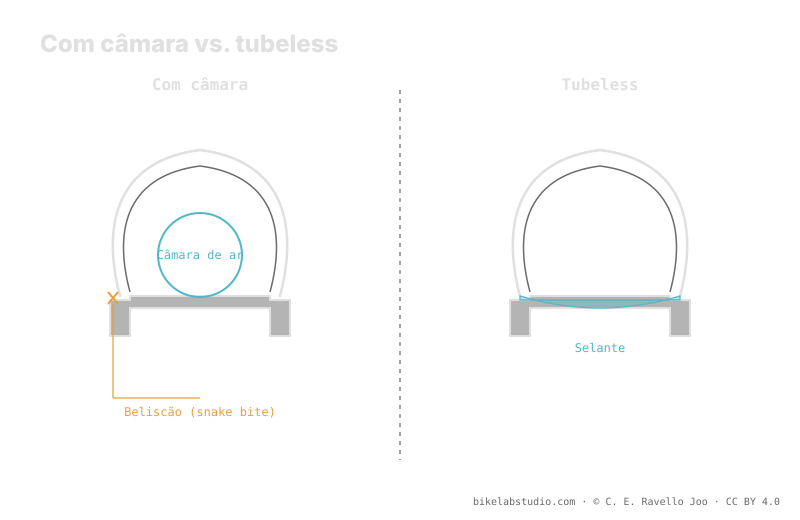

Com câmara, um impacto a fundo contra uma quina provoca a mordida de cobra (pinch flat / snake bite): o aro esmaga a câmara e a corta em dois. Sem câmara não há nada para esmagar, então o tubeless elimina esse furo, sela os pequenos e deixa rodar mais baixo. Em troca pede outra manutenção (selante que seca, montagem mais exigente). E a redução de pressão não é um «−3 psi» fixo: é um mito. Quanto baixar é fechado pela calculadora, até o limite do burping.
A discussão tubeless vs câmara costuma se reduzir a slogans. O útil é separar o que cada um ganha de verdade — e qual frase repetida não se sustenta.
O tubeless abre margem para baixar, mas não um número fixo. A Calculadora de Pressão PSI dá sua faixa real por peso, largura e aro. ▶ Abrir a calculadora PSI
A mordida de cobra — também chamada pinch flat ou snake bite pelos dois cortes paralelos que deixa — ocorre quando o pneu chega ao fundo contra uma quina e o aro esmaga a câmara contra a carcaça, perfurando-a em dois pontos. É o furo típico de rodar com pouca pressão usando câmara. No tubeless não há câmara para esmagar, então esse modo de falha desaparece: você pode baixar a pressão para ganhar aderência e conforto com muito mais margem antes de danificar algo.

A câmara falha por esmagamento; o tubeless retira a peça que se esmaga. Não é uma melhoria marginal: muda o que pode te deixar na mão.
No peso, o tubeless tira a câmara mas soma selante e, às vezes, fita de aro e válvula tubeless; o balanço costuma ser um pouco favorável e, sobretudo, move massa para o centro da roda, o que se sente na resposta. Na manutenção, a câmara é mais simples: fura, remenda e segue. O tubeless pede revisar e repor o selante porque seca, uma montagem mais exigente para assentar o talão e levar espetos para cortes grandes. Cada sistema cobra seu pedágio em um lado distinto.
Circula a ideia de que passar ao tubeless equivale a baixar «−3 psi» em relação à câmara, como se fosse uma subtração universal. Não é. Quanto você pode baixar depende do seu peso, da largura do pneu, da largura interna do aro, do terreno, de usar ou não inserto e de onde começa o burping na sua montagem. O tubeless abre margem para baixar; traduzir essa margem num número fixo é justamente o erro que esta enciclopédia não comete. O valor real sai de considerar todas as variáveis, não de uma subtração.
O corte duplo (pinch flat / snake bite) que o aro faz na câmara ao chegar ao fundo. Sem câmara, o tubeless a elimina.
Depende: tira câmara mas soma selante e às vezes fita e válvula. Costuma sair um pouco menos e melhor distribuído.
Não, é um mito. A redução depende de peso, largura, aro, terreno e inserto. É fechada pela calculadora, não por uma subtração.
Repor selante que seca, montagem mais exigente e espetos para cortes grandes. A câmara é mais simples.
Sem «−3 psi» que valha: a Calculadora de Pressão PSI fecha sua faixa real por roda por largura, aro e disciplina. ▶ Abrir a calculadora PSI